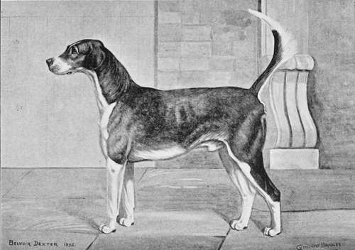

The Art Itself. Part 3
Description
This section is from the book "Hunting: A Manual of Fox, Hare, Stag & Otter Hunting", by J. Otho Paget. Also available from Amazon: Hunting: A Manual of Fox, Hare, Stag & Otter Hunting.
The Art Itself. Part 3
Fortune favours you, for the cub has gone away, and that is more than you could have expected. Out with your horn and blow a cheery blast as you gallop to the point of exit. Eighteen couple out of. the twenty-six are already on the line, and are streaming over the grass. They revel on clean scenting-ground, and show no signs of flagging, in spite of near on two hours' hard work in covert. At this pace you know they must run into him in a very few minutes, for the whip who viewed him away reported him * very beat.' Such might have been the case had all been pasture, but after two grass fields comes a fallow, and still more arable is seen beyond. After carrying a feeble line into the middle of the field, hounds can make nothing more out of it, and look at you, as much as to say, ' What shall we do now ?' A bright September sun is shining down on the hard-baked soil, and somewhere in the clear blue sky overhead a lark is singing his morning song in a peaceful, irritating manner. You wish now you had never allowed that cub to leave the covert, for he may have gone on, he may be lying down, or he might have gone back, but in any case you have every chance of losing him. Stand still a moment longer, and let those few hounds that will try, see if they can hit off" the line. They flung themselves forward at first, let them now try back as they seem inclined to, for a tired cub will double like a hare. Back on your left-hand a youthful son of Belvoir ' Dexter' is whimpering down a furrow ; but you dare not trust a hound on his first day, and watch anxiously an old one go to his assistance. The young one was right, and the sages of the pack bustle after him. The furrow ends at last in a green headland, which carries a fair scent, and hounds can drive on again. At the corner of the field where two fences meet is a clump of bushes, and a dry deep ditch beyond. When hounds reach this, spot they hesitate and snuff about in an undecided way, until at last one makes a dash into the bushes, and then out into the next field goes the fox. The whole pack gets a view, and racing him across the stubbles, they roll him over before he can reach the next fence. ' Whoo-hoop !' You have killed your first fox, and at this moment there is no man in the world with whom you would change places. Now go home, and do not be persuaded to draw again, though hounds and horses may be quite fresh.
Belvoir Dexter - From a Drawing by Cuthbert Bradley
The objection to allowing a cub that is tired to go away from a covert is, you may change on to one that is quite fresh, or worse still, get on to the vixen who is pretty certain to be hanging about somewhere in the neighbourhood ; but I think there are quite as many chances against you in covert as in the open. As I have already said, if you know of a litter in a small spinney that is not a regular draw, you are quite right to hold up the last two, and after you have killed one to let the other go. Of course, you will have to study the wishes of covert-owners, and when they are keen about your always finding on their property, they very naturally object to an unnecessary slaughter of the innocents. If you are fortunate enough to have some large woodlands that are well stocked with foxes, the oftener you can hunt them the better sport you will get later on. You ought not to go in the open until all your large woods have been well rattled, many of the foxes killed, and the rest dispersed. You must not allow your foxes to get it into their heads that a big wood is a house of refuge, but rather that it is a place of danger when hounds are about. It is the making of a pack to have an occasional day in the woods at the beginning of the season, and they will be all the better when you take them in the open.
Every litter should be disturbed in turn, and when you have been the round you can begin again ; but in your second visit you must not on any account hold them up. I have said I do not advise it on the first occasion, but to do it the second time is unfair on covert-owners, keepers, and the members of your hunt. By the first or second week in October you will probably have completed the round, and you may then look forward to some fun ; but continue to meet at an early hour—say not later than 8.30. The morning is the time when you have the greatest advantage over a fox, for then he has not had many hours to digest his food, and, like other animals, he is not in the best of wind with a full stomach.
Still confine your attention to cubs, and go away with the last. Your field will be growing larger every day, and of course they want to have a gallop, so that you cannot always trust their opinion as to what is or what is not an old fox. You would also like a good gallop quite as much as they would, but they are responsible only for their own pleasure of the moment, and on you rests the future prospects of the season.
I have thus far been addressing myself to a young man who has just taken a country, and who is hunting hounds himself, in which strain I will continue. Take heed, you who are ancient in wisdom and experienced in the craft, that my notes are only for the beginner and not for you, whose knowledge must be greater than mine.
Most packs begin the regular season the first week in November, but there is generally some special day in every hunt that is hallowed by custom as the opening of the season, and I need hardly tell you in this matter to follow the example of your predecessors. Your hounds should now, after a successful cub-hunting time, have full confidence in both you and themselves. They are quite as determined as you to kill every fox they find, and that is the proper spirit in which to go hunting, though it is needless to say you will not always attain that end; still, you will do it often enough to make you confident of accomplishing it on the next occasion. Nothing succeeds like success with hounds, and a pack that is in blood is certain to show sport.
Continue to: